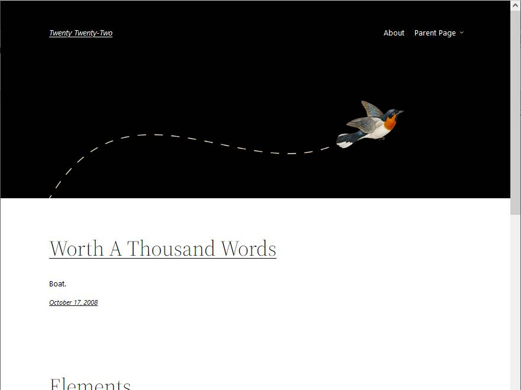
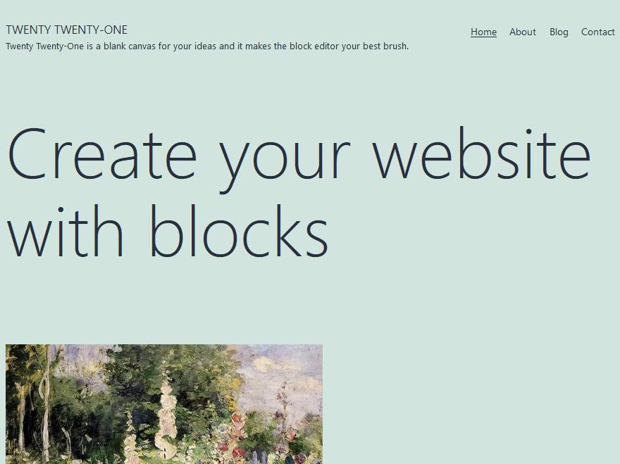
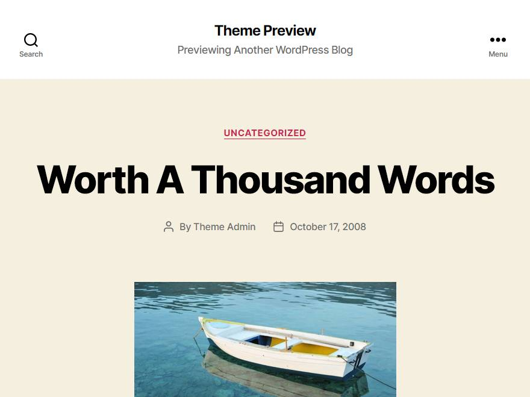

Los ejercicios de WordPress se han dividido en cuatro páginas:
Los Sistemas de gestión de contenidos web (en inglés, Content Management Systems, CMS) son aplicaciones que permiten crear, mostrar y administrar sitios web completos sin necesidad de conocimientos técnicos.
Los primeros CMS, aparecidos en la segunda mitad de los 90, fueron aplicaciones propietarias, pero a partir del año 2000, los CMS libres ocuparon ese espacio: phpNuke (2000), Drupal (2001), WordPress (3), Joomla (2005), ...
Esta gráfica de Google Trends permite comparar la frecuencia de búsquedas en Google de tres de los CMS libres más populares: WordPress, Drupal y Joomla. Esta comparación no permite decir qué aplicación es mejor en general o para nuestras necesidades en particular, pero permiten hacerse una idea de su popularidad relativa:
Los blogs (palabra inventada en 1999 como abreviatura de weblog, palabra inventada a su vez en 1997) se refiere a un tipo particular de sitio web en el que el contenido se organiza principalmente de forma cronológica, a imitación de los diarios personales o cuadernos de bitácora.
WordPress apareció en 2003 como herramienta de creación de blogs y rápidamente se convirtió en el sistema más utilizado. Su creador, Matt Mullenweg, fundó en 2005 la empresa Automattic, que es la que desarrolla y publica WordPress.
Con el paso del tiempo WordPress ha ido adquiriendo capacidades que permiten calificarlo como sistema de gestión de contenidos de propósito general. Alrededor de él se ha creado una gran industria de plug-ins, temas y plantillas. La cantidad de herramientas disponibles y su facilidad de uso lo ha convertido en la base de una gran parte de la web actual. Algunas estadísticas publicadas, como las W3Techs, indican que actualmente (mayo de 2019) más del 30% de los sitios web entre los 10 millones de sitios con más tráfico están creados con WordPress.
WordPress es software libre y se distribuye bajo la licencia GPL 2.0. Está programado en PHP y utiliza MySQL como base de datos, aunque su interfaz permite gestionar la aplicación sin necesidad de conocimientos técnicos sobre PHP o MySQL.
WordPress ha tenido siempre un ritmo de desarrollo muy rápido, pero manteniendo siempre gran compatibilidad entre versiones. Las versiones de WordPress se identifican por tres números (X.Y.Z). Las versiones principales se identifican por los dos primeros números (X.Y), que siguen un orden correlativo y cuando el segundo llega a 9, el primero aumenta una unidad y el segundo empieza de nuevo desde 0. El tercer número corresponde a versiones menores que incluyen actualizaciones de seguridad y correcciones de fallos.
Durante los años 2017 y 2018, el desarrollo de WordPress estuvo centrado en un nuevo sistema de edición llamado Gutenberg que ha transformado el modo de edición en WordPress basándolo en bloques de contenido. Gutenberg se incluyó por primera vez en WordPress 5.0, publicada en diciembre de 2018, pero seguirá desarrollándose en los próximos años.
Durante su desarrollo, Gutemberg estuvo en forma de plugin experimental: Plugin Gutenberg y en general no tuvo una buena aceptación (por ejemplo, esta crítica de Dedoimedo de septiembre de 2018). Quizás por eso, se creó un plug-in llamado Classic Editor que permite seguir utilizando el interfaz clásico. Este plugin es uno de los más instalados.
Novedades en cada versión: 4.0 - 4.1 - 4.2 - 4.3 - 4.4 - 4.5 - 4.6 - 4.7 - 4.8 - 4.9 - 5.0 - 5.1 - 5.2 - 5.3 - 5.4 - 5.5 - 5.6 - 5.7 - 5.8 - 5.9
Referencias:
WordPress ha incluido siempre un tema predeterminado. Desde 2010, más o menos al final de cada año, se publica un nuevo tema predeterminado que se llama como el año siguiente. El único año en que no se publicó un nuevo tema fue en 2018, por motivos que desconozco pero que probablemente tenían que ver con el estado de desarrollo del nuevo editor visual Gutenberg, finalmente introducido en WordPress 5.0 (diciembre de 2018).
Cuando se instala WordPress por primera vez, se instala con el tema anual más reciente disponible. Cuando se publica una nueva versión de WordPress y WordPress se actualiza automáticamente, el tema elegido por el usuario se mantiene aunque se haya publicado un nuevo tema anual. En cualquier momento, el administrador puede puede cambiar el tema empleado a cualquier tema anual anterior o posterior disponible.
Referencia: Historia de los temas predeterminados de WordPress (2016)
Puede ver más información sobre los temas predeterminados anteriores en la lección Temas predeterminados de WordPress.
Los cuatro últimos temas predeterminados son los siguientes:
Información sobre Twenty Twenty-Two: Preview - Manual de WordPress - Directorio de temas - Changelog.

Información sobre Twenty Twenty-One: Preview - Manual de WordPress - Directorio de temas - Changelog.

Información sobre Twenty Twenty: Preview - Manual de WordPress - Directorio de temas - Changelog.

Información sobre Twenty Nineteen: Preview - Manual de WordPress - Directorio de temas - Changelog.
Los elementos básicos de un blog de WordPress son:
Las entradas son los bloques de contenido que forman el blog y que llevan asociados una fecha de creación. Las entradas se organizan de forma cronológica inversa. La página principal contiene las últimas entradas y, a medida que se van publicando nuevas entradas, las entradas antiguas se pasan a páginas secundarias
Las páginas son bloques de contenido que no llevan asociados una fecha de creación y que suelen estar siempre accesibles desde la página principal mediante un menú. Suelen contener información general (objetivos del blog, descripción del autor, etc.).
Los comentarios son bloques de contenido que se vinculan a una entrada o página determinada y pueden ser creados por otros usuarios.
Los medios son elementos gráficos o multimedia que pueden incluirse en las entradas o páginas.
La URL de una entrada o una página de WordPress está formada por el dominio y por el slug. WordPress permite elegir entre varios formatos automáticos de slugs, por ejemplo, que incluyan la fecha o el título de la página, pero también se pueden especificar de forma individual.